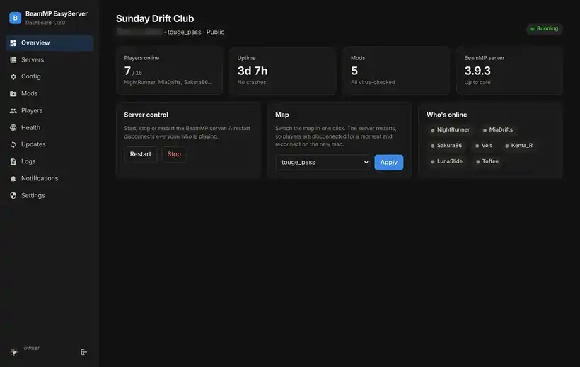
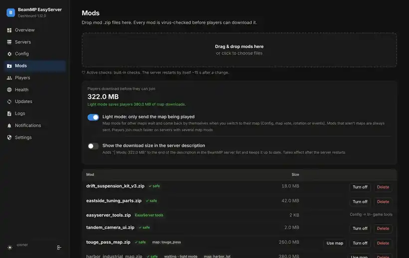

Saját BeamNG.drive multiplayer szerver, egy kattintással beállítva
Az EasyServer feltelepíti a hivatalos BeamMP szervert, és ad hozzá egy vezérlőpultot a gépedre vagy a telefonodra. Adj hozzá modokat, nézd meg, ki játszik, és tartsd távol a trollokat - konfigurációs fájlok és parancssor nélkül. Ingyenes és nyílt forráskódú, Windowsra és Linuxra.


KezdésKb. tíz perc, nagyrészt a letöltésekre vársz.
1. Szerezz egy ingyenes AuthKeyt
Lépj be a keymaster.beammp.com oldalon Discorddal, kattints a Keys, majd a + gombra, és másold ki a kulcsot. Ettől lesz fent a szervered a nyilvános BeamMP listán.
2. Telepítés
Windows: Töltsd le a BeamMP-EasyServer-Windows.zip fájlt a legújabb kiadásból, csomagold ki, és kattints duplán az Install-BeamMP-Server.bat fájlra.
Linux: Illeszd be ezt egy terminálba:
curl -fsSL https://raw.githubusercontent.com/Csabika-dev/beammp-easyserver/stable/linux/install.sh | sudo bash
Ez a tesztelt Stable verziót telepíti. A legújabb funkciókért nézd meg a Rolling verziót.
3. Nyisd meg a vezérlőpultot
A szervergépen nyisd meg a http://localhost:30815 címet, és válassz jelszót. Telefonról vagy egy másik otthoni gépről a http://<szerver-ip>:30815 címet használd.
4. Engedd be a barátaidat
Az Állapot oldalon kattints a Port megnyitása automatikusan gombra. A legtöbb router elfogadja. Ha a tiéd nem, továbbítsd te a 30814-es portot (TCP és UDP), és az Állapot oldal szól, ha működik.
Utána kattints a Meghívó másolása gombra, és illeszd be Discordon. Lépésről lépésre útmutatók (angolul)
Inkább megnéznéd? Az egész telepítés kb. 2 perc. Megnyitás YouTube-on
Mit tudAzoknak készült, akik a barátaikkal akarnak játszani, nem szerveradminisztrációt tanulni. Minden funkció
Modok aggódás nélkül
Húzd a mod zip fájlokat az oldalra. Mindegyiket átnézi rejtett programok, álcázott fájlok és zipbombák után a Microsoft Defender vagy a ClamAV, ha szeretnéd, a VirusTotal is, mielőtt a játékosok letölthetnék.
- Modböngésző: egy kattintással telepíts a BeamNG tárolóból, és ugyanígy frissíts
- Könnyű mód: a játékosok csak az épp játszott pályát töltik le, így gyorsabb a csatlakozás
- Modcsomagok: az összes modod egyetlen fájlként viheted át vagy oszthatod meg

Lásd, ki játszik, és mikor
Játékosok naponta, a legforgalmasabb órák, heti hőtérkép, legaktívabb játékosok, szerverrekordok és azok a pályák, amiken tényleg maradnak az emberek.
- Kirúgás, némítás és kitiltás a vezérlőpultból, Discordból vagy a játék chatjéből
- Karbantartási mód bezárja a szervert, amíg dolgozol rajta
- Csapatfiókok a segítő barátoknak, csak azokkal a jogokkal, amiket te adsz

Döntsd el, mennyire legyen nyitott
Egy kattintás bárhová állítja a szervered a Legbiztonságosabb (csak meghívóval, antibot, elárasztás elleni védelem) és a Mindenkinek nyitott között. Minden konfigurációs változás mentődik, így látod, mi változott, és vissza is vonhatod.
- Meghívólista, mert a BeamMP-ben nincs csatlakozási jelszó
- Antibot: csatlakozási kódok, vendégek tiltása és kapcsolatkorlátok

Irányítsd a telefonodról
A vezérlőpult bármilyen telefonos böngészőben működik. Van Android app, iPhone-on pedig a kezdőképernyőre teheted.
- Értesítések összeomlásról, csatlakozásokról és frissítésekről telefonon, Discordon, Telegramon, Slacken vagy e-mailben
- Discord bot /status, /start, /restart, /whitelist parancsokkal és chathíddal
- Alvás és Wake-on-LAN, hogy ne kelljen egész nap mennie a gépnek

Állapotoldal a játékosoknak
Egy link megmutatja, fut-e a szerver, ki van fent, milyen modokat kell letölteni és mi a következő esemény. Bejelentkezés nélkül, címek és beállítások nélkül.
Az 1.15 újdonságaiMár a Rollingban. Tesztelés után kerülnek a Stable-be.
Járműszabályok
Tilts le kellékeket, utánfutókat vagy bármilyen autót, és állítsd le a spawnspamet. A mindenkit lagoltató nehéz mod autókat magától kiszúrja.
Szerverpluginek
Telepíts közösségi játékmódokat, például CareerMP-t, freeRoamMP-t és BeamJoyt, egyenesen a szerzőjük oldaláról.
Csapatban üzemeltetve
Hívd meg a barátaidat egy linkkel, ami egyszer működik és egy óra múlva lejár, és döntsd el, ki mit csinálhat az egyes szervereken. Discorddal is beléphetnek.
Ez is benne vanMind opcionális. Kapcsold be, amire szükséged van.
Meghívó másolása
Kész Discord üzenet a címmel és a porttal.
Pályaszavazás és -rotáció
A játékosok beírják: /vote, vagy a pálya menetrend szerint vált.
Heti események
A „péntek esti drift” pályát és modokat vált, és bejelenti Discordon.
/tp és /repair
Teleportálás a barátokhoz, ha elfogadják, valósághű vagy hardcore javítási szabályokkal.
Autótakarítás
Az elhagyott autók eltűnnek, visszaszámlálással az éjszakai takarítás előtt.
Chateszközök
Üdvözlő üzenet, időzített bejelentések, chatszűrő, antispam és /countdown.
Több szerver
Egy gépen több szerver, mindegyik saját CPU-, RAM- és letöltési korláttal.
Éjszakai mentések
Visszaállítás vagy költözés új gépre egyetlen fájllal.
IP-cím elrejtése
Opcionális továbbító és elárasztás elleni védelem DDoS ellen.
Naplómagyarázó
Szerverhibák érthető nyelven, azzal együtt, mit kell tenni.
BiztonságA szervered egy gép az otthoni hálózatodon, úgyhogy ez fontos.
A kulcsok titkosítva vannak
Az AuthKey, a tokenek és a jelszavak sosem kerülnek tárolásra sima szövegként.
Külön felhasználók Linuxon
A játékszerver és a vezérlőpult is saját, korlátozott felhasználóként fut.
Kétlépcsős bejelentkezés
Kötelező, mielőtt a vezérlőpult elérhető lenne az internetről.
Minden változtatásnál tesztelve
Automatikus tesztek próbálnak betörni minden vezérlőpult-oldalra és a játékpluginba minden frissítésnél.
LetöltésekMindkettő ingyenes. Nem tudod, melyik? Válaszd a Stable-t.
Stable
Tesztelt. Ez a GitHubon „Latest” jelölésű kiadás.
- Windows: töltsd le a BeamMP-EasyServer-Windows.zip fájlt, csomagold ki, és kattints duplán az Install-BeamMP-Server.bat fájlra
- Linux:
curl -fsSL https://raw.githubusercontent.com/Csabika-dev/beammp-easyserver/stable/linux/install.sh | sudo bash
Rolling
Új funkciók, amint elkészülnek. Lehetnek benne hibák.
- Windows: töltsd le a ZIP-et, csomagold ki, nyisd meg a windows mappát, és kattints duplán az Install-BeamMP-Server.bat fájlra
- Linux:
curl -fsSL https://raw.githubusercontent.com/Csabika-dev/beammp-easyserver/main/linux/install.sh | sudo bash
- Mac (kísérleti, csak Rolling): illeszd be ezt a Terminálba. A szervert egy kis Linux virtuális gépben futtatja, ami a Mackel együtt indul (hogyan működik).
curl -fsSL https://raw.githubusercontent.com/Csabika-dev/beammp-easyserver/main/mac/install.sh | bash
- Valami elromlott? Telepítsd fölé a Stable-t. A beállításaid és a modjaid megmaradnak.
Mi változott az egyes verziókban: változásnapló, összes kiadás
KérdésekTovábbi válaszok és a közösség
Igen. Ingyenes és nyílt forráskódú (MIT licenc), minden funkcióval és reklámok nélkül. A BeamMP és a szervere is ingyenes. A játékhoz kell a saját BeamNG.drive példányod.
Az EasyServer a hivatalos BeamMP szervert telepíti, és naprakészen tartja. Maga az EasyServer közösségi projekt, nem a BeamMP csapat készítette vagy támogatja.
Bármilyen 64 bites Windows 10 vagy 11 rendszerű PC, vagy Linux (Ubuntu, Linux Mint, Debian és mások, akár egy Raspberry Pi 4 vagy 5 64 bites rendszerrel). Egy baráti társaságnak egy régi laptop is elég. A feltöltési sebesség többet számít, mint a processzor.
Csak ha a Port megnyitása automatikusan gombra kattintasz, ami megkéri a routert, hogy nyissa meg a játék portját. Különben csak a gép saját tűzfalán nyitja meg a portot, és előtte rákérdez.
Igen. A vezérlőpult bármilyen telefonos böngészőben működik, van Android app, és iPhone-on a kezdőképernyőre teheted. Otthonon kívülről is kezelheted, ha bekapcsolod a HTTPS-t és a kétlépcsős bejelentkezést.
Nyiss egy issue-t a GitHubon. Biztonsági problémánál inkább a privát bejelentést használd.
Próbáld ki a gépeden
Töltsd le, indítsd el, és kövesd a lépéseket. Ha elakadsz, a Súgó oldal és a közösség segít.